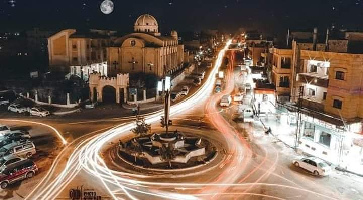

محافظة الحسكة محافظة سورية تقع في الشمال الشرقي من سوريا، مركزها مدينة الحسكة، وهي مقسمة إلى أربع مناطق إدارية وأربع عشرة ناحية. من أهم مدن وبلدات هذه المحافظة: الحسكة مركز المحافظة، القامشلي واليعربية والشدادي والمالكية وتل حميس وعامودا ورأس العين والدرباسية والقحطانية وتل براك. توجد فيها آلاف القرى المنتشرة خصوصًا قرب المصادر المائية لا سيما نهر الخابور. معظم السكان من العرب مع وجود أقلية كردية كبيرة وأقلية سريانية أصغر في القامشلي ورأس العين. تعتبر المحافظة المنتج الثاني للنفط في سوريا (بعد محافظة دير الزور)، حيث تنتشر حقول النفط في رميلان والهول والجبسة. يقطع المحافظة نهر الخابور الذي يأتي من مدينة رأس العين شمالًا مارًا منها باتجاه الجنوب حيث يتحد مع نهر الفرات قرب مدينة دير الزور الواقعة شرق سورية. يعمل أغلب سكان محافظة الحسكة في الزراعة وتمتاز بزراعة القمح والقطن والفواكه كالتفاح والعنب. تضم محافطة الحسكة مواقع أثرية متنوعة مثل حموقار التي يعتبرها علماء الأثار من أقدم مدن العالم، وتل حلف، وتل براك، وتل شاغربازار.
